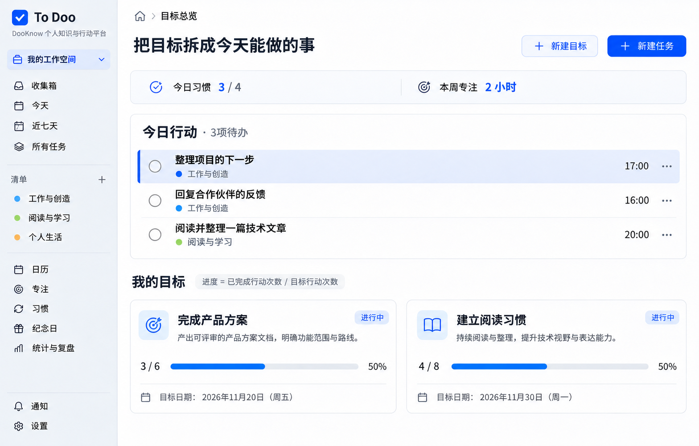

DOOKNOW / TO DOO · DESIGN STUDY
让工作区回到事情本身
ToDoo 桌面浅色布局概念图。用统一导航连接目标、任务与记录，让内容获得足够空间，并在需要时展开详情。
统一导航弹性内容按需详情区分空状态
按编号快速跳转 · 01—28
显示 28 张 · 已生成 28 张
点击预览打开原图 · 示例数据不对应真实账号
主页面
目标、任务、时间、生活记录与设置的完整工作区。
空状态
附加筛选无结果：保留范围与筛选上下文，提供清除筛选和查看所有任务。
操作窗口
在对应工作区内完成创建、记录、复盘与成果关联。
没有匹配的图稿。试试其他名称，或切换到“全部”。